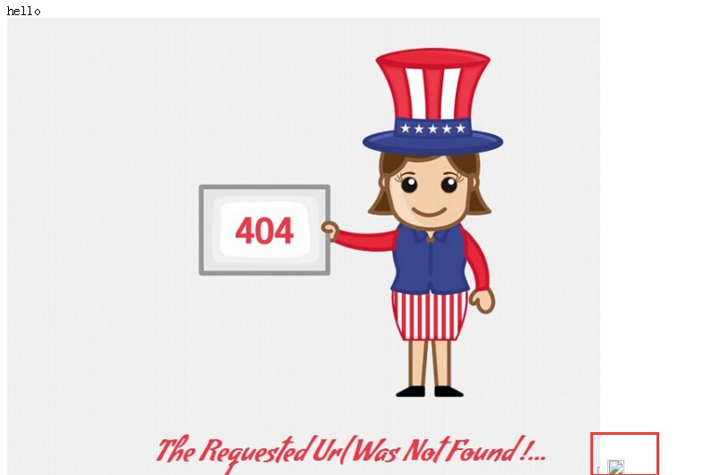
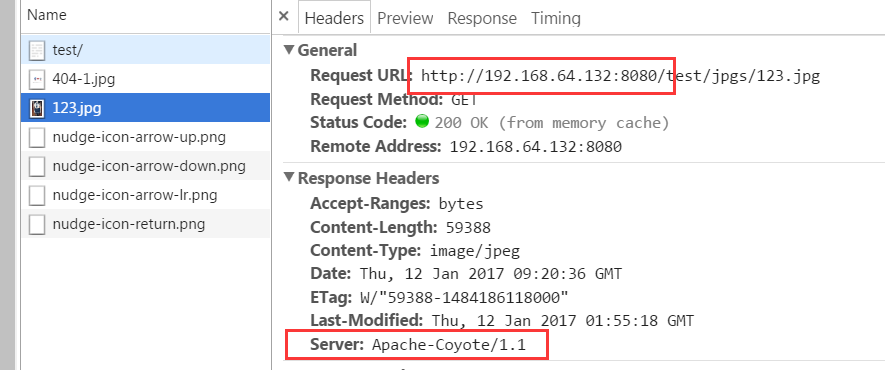
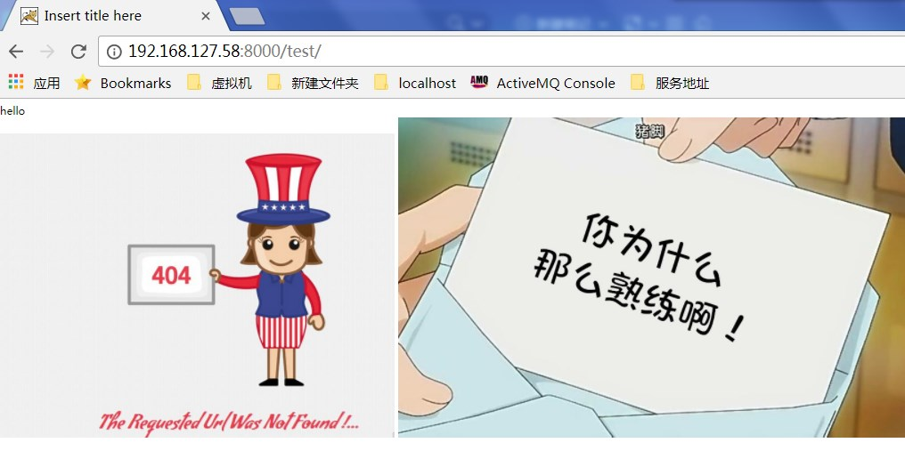
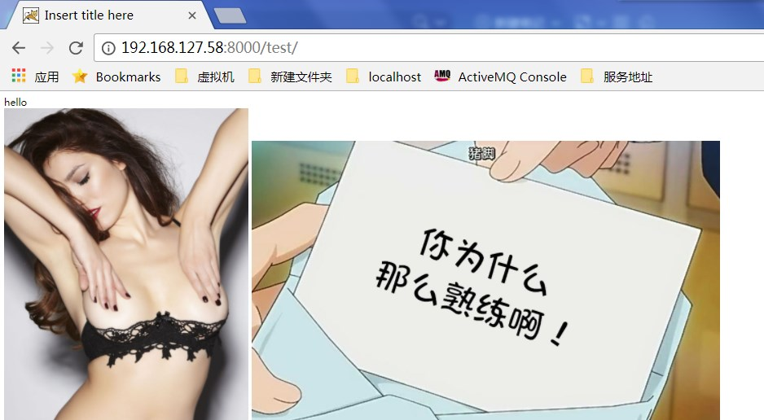
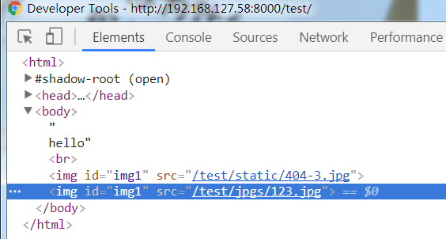
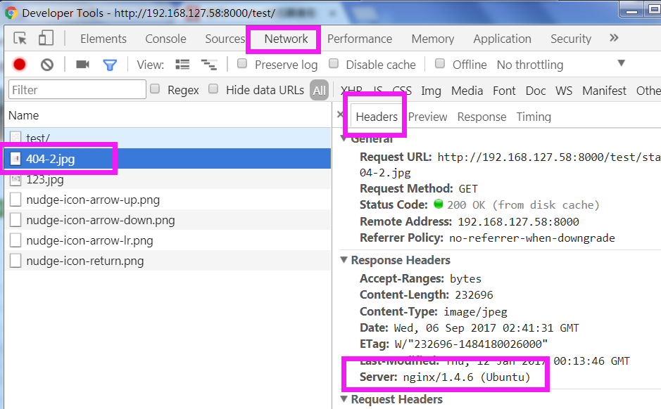
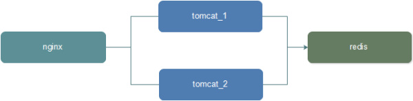
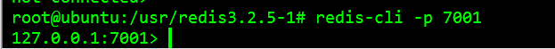
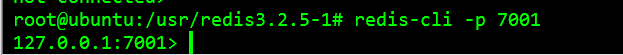
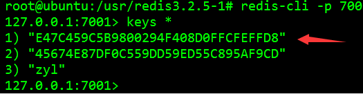

一、Nginx + Tomcat 负载均衡测试(负载均衡+部分静态图片处理)
环境说明： nginx+tomcat @ubuntu
ok 首先你得有一个Ubuntu或者什么其他的linux.安装jdk tomcat nginx 等.. 记得配置环境变量
本测试环境的配置如下:
jdk /usr/java/jdk1.7 Nginx /usr/nginx-1.4.2 redis /usr/redis3.2.5-1 tomcat /usr/apache/tomcat-7-1 /usr/apache/tomcat-7-2 /usr/apache/tomcat-7-3 |
1配置tomcat
Linux系统下怎样配置多个Tomcat同时运行呢:
如何在同一系统里同时启动多个Tomcat.
(1)配置环境变量vi /etc/profile
在最后加上配置, 比如这里加了3台tomcat
#--------------------------------------------------------------------
#set tomcat path @olddoor
### first tomcat ###
CATALINA_BASE=/usr/apache/tomcat-7-1
CATALINA_HOME=/usr/apache/tomcat-7-1
TOMCAT_HOME=/usr/apache/tomcat-7-1
export CATALINA_BASE CATALINA_HOME TOMCAT_HOME
### second tomcat ###
CATALINA_2_BASE=/usr/apache/tomcat-7-2
CATALINA_2_HOME=/usr/apache/tomcat-7-2
TOMCAT_2_HOME=/usr/apache/tomcat_7-2
export CATALINA_2_BASE CATALINA_2_HOME TOMCAT_2_HOME
### third tomcat ###
CATALINA_3_BASE=/usr/apache/tomcat-7-3
CATALINA_3_HOME=/usr/apache/tomcat-7-3
TOMCAT_HOME=/usr/apache/tomcat-7-3
export CATALINA_3_BASE CATALINA_3_HOME TOMCAT_3_HOME
#set java path--------------------------------------------------------
JAVA_HOME=/usr/java/jdk1.7
export JRE_HOME=$JAVA_HOME/jre
export CLASSPATH=$JAVA_HOME/lib:$JRE_HOME/lib:$CLASSPATH
export PATH=$JAVA_HOME/bin:$JRE_HOME/bin:$PATH(2) 3台tomcat的端口号记得在server.xml修改.
(3) 然后修改tomcat的bin目录下的catalina.sh, 加入代码
以tomcat2为例
export JAVA_HOME=
export PATH=
export CLASSPATH=
###以上三个环境变量就是JAVA的环境变量可以不写###
export CATALINA_BASE=$CATALINA_2_BASE #配置对应的tomcat变量即可
export CATALINA_HOME=$CATALINA_2_HOME搞定. 启动3个tomcat试一下效果.
默认访问的tomcat-1的index.jsp如下
<html>
<head>
<meta http-equiv="Content-Type" content="text/html; charset=ISO-8859-1">
<title>Insert title here</title>
</head>
<body>
hello<br/>
<img id="img1" src=/test/static/404-1.jpg />
<img id="img1" src=/test/jpgs/123.jpg />
</body>
</html>tomcat-2 和tomcat-3的index.jsp 中的404图片名字分别为404-2.jsp 和404-3.jpg
最后访问效果
tomcat-1:
tomcat-2

tomcat3
tomcat2和tomcat3的webapps目录下并未放置jpgs/123.jpg图片所以找不到.
2配置nginx
修改nginx.conf
#user nobody; # user root root #Nginx所在的用户和用户组
user root root; #Nginx所在的用户和用户组
worker_processes 1;# 启动的工作进程数量
#错误日志存放路径
#error_log logs/error.log;
#error_log logs/error.log notice;
#error_log logs/error.log info;
error_log logs/error.log info; #add by olddoor-----------
#pid logs/nginx.pid;
#add by olddoor-----------
#add end------------------
events {
worker_connections 1024;
}
http {
include mime.types;
default_type application/octet-stream;
#定义日志格式
#log_format main '$remote_addr - $remote_user [$time_local] "$request" '
# '$status $body_bytes_sent "$http_referer" '
# '"$http_user_agent" "$http_x_forwarded_for"';
#access_log logs/access.log main;
sendfile on;
#tcp_nopush on;
#keepalive_timeout 0;
keepalive_timeout 65;
#gzip on;
#add by olddor---------------------
upstream localhost {
#发到localhost上的请求，通过Nginx转发到实际处理请求的服务器
server 192.168.64.132:8080 weight=1;
server 192.168.64.132:8081 weight=1;
server 192.168.64.132:8082 weight=1;
}
#add by olddor over----------------
server {
listen 8000; #宿主机访问虚拟机的80端口好像有点问题,建议不使用80端口
server_name localhost;
#charset koi8-r;
#access_log logs/host.access.log main;
location / {
proxy_connect_timeout 3; #add by olddoor
proxy_send_timeout 30; #add by olddoor
proxy_read_timeout 30; #add by olddoor
proxy_pass http://localhost; #add by olddoor
#root html; #ignore by olddoor
#index index.html index.htm; #ignore by olddoor
}
location /test/jpgs/ {
alias /data/imgs/;
}
#location /jpgs
#error_page 404 /404.html;
# redirect server error pages to the static page /50x.html
#
error_page 500 502 503 504 /50x.html;
location = /50x.html {
root html;
}
# deny access to .htaccess files, if Apache's document root
# concurs with nginx's one
#
#location ~ /\.ht {
# deny all;
#}
}
# another virtual host using mix of IP-, name-, and port-based configuration
#
#server {
# listen 8000;
# listen somename:8080;
# server_name somename alias another.alias;
# location / {
# root html;
# index index.html index.htm;
# }
#}
# HTTPS server
#
#server {
# listen 443;
# server_name localhost;
# ssl on;
# ssl_certificate cert.pem;
# ssl_certificate_key cert.key;
# ssl_session_timeout 5m;
# ssl_protocols SSLv2 SSLv3 TLSv1;
# ssl_ciphers HIGH:!aNULL:!MD5;
# ssl_prefer_server_ciphers on;
# location / {
# root html;
# index index.html index.htm;
# }
#}
}通过
server 192.168.64.132:8080 weight=1;
server 192.168.64.132:8081 weight=1;
server 192.168.64.132:8082 weight=1;
的配置完成3台tomcat的轮询负载均衡.
访问时候使用 192.168.64.132:8000/test 取代192.168.64.132:8080/test , 192.168.64.132:8081/test , 192.168.64.132:8082/test
3 使用nginx管理部分静态数据
配置方式可以直接拦截指定路径的 jpg之类的文件.
这里只拦截目录
location /test/jpgs/ {
alias /data/imgs/; #即拦截 /test/jpgs/请求->匹配物理路径: /data/imgs/
}
注意alias 和root 的拦截逻辑略有不同.
在linux服务器上创建对应的文件夹并上传图片123.jpg
启动三台tomcat以及Nginx服务器. 然后进行测试:
继续通过192.168.64.132:8080/test访问可以看到效果是:
两张图片的来源都是tomcat-1

而访问192.168.64.132:8000/test 使用nginx服务则
随机显示第一张图片. 而第二张123.jpg 则显示的是nginx指定目录的图片而非tomcat上的图片.

或者是

2张图片来源都是nginx, 只是第一个是nginx到tomcat上获取. 第二张图片被拦截到/data/imgs上获取.

 以404-2为例
4 性能测试对比
使用ab工具的压力测试方法和结果，ab是针对apache的性能测试工具，可以只安装ab工具。
ubuntu安装ab
apt-get install apache2-utilscentos安装ab
yum install httpd-tools通过命令测试:
ab -kc 1000 -n 1000 http://192.168.64.132:8080/test/
这个指令会使用1000个并发，进行连接1000次测试tomcat-1
ab -kc 1000 -n 1000 http://192.168.64.132:80/test/
这个指令会使用1000个并发，进行连接1000次测试nginx
对比结果:
8080
#用于描述每个请求处理时间的分布情况，例如：50% 28 50%请求处理时间不超过28毫秒 （这里所指的处理时间是指：Time per request ）
Percentage of the requests served within a certain time (ms)
50% 28
66% 32
75% 34
80% 35
90% 53
95% 62
98% 65
99% 66
100% 1823 (longest request)
second表示当前测试的服务器每秒可以处理16.54个静态html的请求事务，后面的mean表示平均。这个数值表示当前机器的整体性能，值越大越好。
Requests per second: 547.04 [#/sec] (mean)
Time per request: 1828.016 [ms] (mean)
Time per request: 1.828 [ms] (mean, across all concurrent requests)
Transfer rate: 76.93 [Kbytes/sec] received
80 nginx在小规模请求下响应速度慢于直接请求tomcat, 而处理能力nginx明显强于tomcat
Percentage of the requests served within a certain time (ms)
50% 107
66% 201
75% 243
80% 257
90% 334
95% 360
98% 1116
99% 1117
100% 1118 (longest request)
second表示当前测试的服务器每秒可以处理16.54个静态html的请求事务，后面的mean表示平均。这个数值表示当前机器的整体性能，值越大越好。
Requests per second: 873.38 [#/sec] (mean)
Time per request: 1144.983 [ms] (mean)
Time per request: 1.145 [ms] (mean, across all concurrent requests)
Transfer rate: 216.83 [Kbytes/sec] received
当请求改为1000个并发，进行连接1000次后
8080已经无法及时响应
This is ApacheBench, Version 2.3 <$Revision: 1528965 $>
Copyright 1996 Adam Twiss, Zeus Technology Ltd, http://www.zeustech.net/
Licensed to The Apache Software Foundation, http://www.apache.org/
Benchmarking localhost (be patient)
Total of 9967 requests completed而80还是稳稳的
Server Hostname: localhost
Server Port: 80
Time taken for tests: 1.145 seconds
Complete requests: 1000
Failed requests: 551
(Connect: 0, Receive: 0, Length: 551, Exceptions: 0)
Non-2xx responses: 1000
Keep-Alive requests: 0
Total transferred: 254220 bytes
HTML transferred: 105792 bytes
second表示当前测试的服务器每秒可以处理16.54个静态html的请求事务，后面的mean表示平均。这个数值表示当前机器的整体性能，值越大越好。
Requests per second: 873.38 [#/sec] (mean)
Time per request: 1144.983 [ms] (mean)
Time per request: 1.145 [ms] (mean, across all concurrent requests)
Transfer rate: 216.83 [Kbytes/sec] received
Connection Times (ms)
min mean[+/-sd] median max
Connect: 16 26 4.6 27 33
Processing: 16 155 174.5 88 1101
Waiting: 13 155 174.6 88 1101
Total: 44 181 172.5 107 1118
Percentage of the requests served within a certain time (ms)
50% 107
66% 201
75% 243
80% 257
90% 334
95% 360
98% 1116
99% 1117
100% 1118 (longest request)tips 如需将屏幕上的测试结果生成为文本文件, 可以在测试时候配合|tee 命令
如:
ab -kc 1000 -n 1000 http://192.168.64.132:80/test/ |tee /usr/111.txt #将结果保存到/usr/111.txt中二、Nginx + Tomcat +Redis (用户session会话集中管理)
在上例的基础上新增Redis, 用于集中管理用户会话session
效果如图

2、测试：
登录redis-cli

配置过程
1 、实验环境介绍：
安装nginx、tomcat、redis服务
| 软件 | version | ip：port |
|---|---|---|
| Nginx | 1.4.6 | 192.168.127.58 : 8000 |
| Redis | 3.2.5-1 | 192.168.127.58 : 7001 |
| tomcat-7-1 | 7.0.73 | 192.168.127.58:8080 |
| tomcat-7-2 | 7.0.73 | 192.168.127.58:8081 |
| tomcat-7-3 | 7.0.73 | 192.168.127.58:8082 |
2、测试：
编写id.jsp 放到3个tomcat的 /webapps/test下
<body>
response from tomcat_3<br/>
<%=session.getId() %>
</body>此时分别访问192.168.127.58:8080/test/id.jsp 和 192.168.127.58:8081/test/id.jsp 192.168.127.58:8082/test/id.jsp 地址，因为访问的是不同web服务器，所以各自显示不同的页面内容及session值肯定不同。
3、配置tomcat的session管理（持久化到redis中）：
- 添加jedis-2.0.0.jar、tomcat-redis-session-manager-1.2-tomcat-7-java-7、commons-pool-1.3.jar 三个jar到tomcat的lib目录下；
- 修改tomcat的conf/context.xml 文件；
<!--配置对应redis的服务端口 并非后台端口-->
<Valve className="com.radiadesign.catalina.session.RedisSessionHandlerValve" />
<Manager className="com.radiadesign.catalina.session.RedisSessionManager"
host="localhost"
port="7001"
database="0"
maxInactiveInterval="60" />4 配置Nginx的负载均衡
本文第一部分已经做了。跳过
5、验证：
访问
和
的结果都是一样的 session id
response from tomcat_1
E47C459C5B9800294F408D0FFCFEFFD8
response from tomcat_2
E47C459C5B9800294F408D0FFCFEFFD8
response from tomcat_3
E47C459C5B9800294F408D0FFCFEFFD8- 使用 redis-cli 连接 redis 服务器，查看会显示有 “E47C459C5B9800294F408D0FFCFEFFD8” key的 session 数据，value为序列化数据。

redis 查询所有的key
keys *